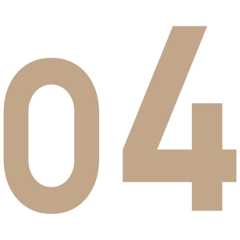
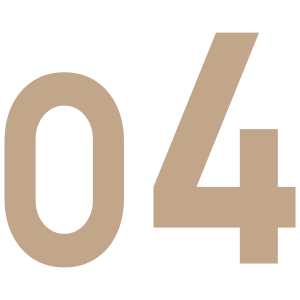

조형 (Shaping)
"모든 작품은 흙에서 시작됩니다.
손 끝에서 부터 하나 하나 다듬어지는 형상,
도자기의 첫 번째 단계는 그 자체로 예술입니다."
건조 (Drying)
"시간을 기다리며,
흙은 완벽하게 단단해지고,
그릇은 그 자체의 결을 찾아갑니다.
이 과정이 없었따면, 완벽한 형태도 존재하지 않았을 것입니다.
유약 (Glazing)
"이제, 도자기에 새로운 생명을 불어넣는 시간.
유약을 통해 그릇은 색을 얻고, 그 속에 깊이를 담습니다.
그릇은 단순히 형태를 넘어서, 예술의 또 다른 차원을 향해 나아갑니다."
구워내기 (Firing)
"가마의 뜨거운 열을 통해,
모든 것이 완성됩니다.
최종 단계를 거쳐, 도자기는 그 생명력을 얻고,
한 조각의 예술로 거듭나게 됩니다.